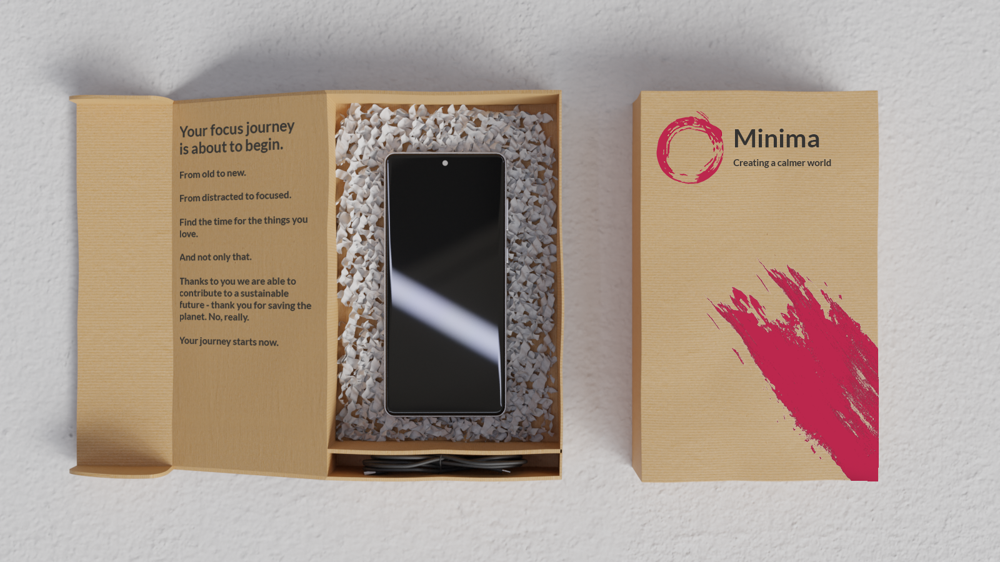

Four ways to pair images and text
Each pattern uses the same 12-column grid and spacing as the rest of the site — only the relationship between image and text changes. The dashed line marks the container's visual center; toggle it to compare how each layout sits against it.
Split — Contained
Image and text each stay inside their own half of the grid — neither one crosses the center line.
Image left, text right
A straightforward split: the image fills the left half, the text sits in the right half. Nothing bleeds across the middle — the two halves stay clearly separate and easy to scan.
Text left, image right
The same pattern, mirrored. Alternating which side carries the image is an easy way to add rhythm between sections without breaking the underlying structure.

Split — Bleed
The image is given extra width and allowed to bleed past the center line, while the text stays confined to a narrower column — creating more visual weight on one side.

Image bleeds right
Pushing the image wider than half the grid gives it more presence, while the text keeps a comfortable, narrow measure off to the side.
Image bleeds left
Same idea in reverse: a narrow text column on the left, and an oversized image bleeding in from the right, past the middle.

Centered Image
The image sits centered on the line rather than to one side, with a short caption centered directly beneath it — good for a single hero shot that doesn't need a text partner.

Centered image, centered caption
Everything shares the same center axis. This pattern works well as a section opener or a standalone showcase moment between denser content blocks.
Big Bold Centered Statement
No image — just a large, centered line of text bounded by rules above and below. Use it sparingly, as a pull-quote or transition between sections.